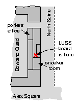

During term time we meet each Tuesday evening at 8:00pm in Lonsdale Bar at the University. Out of term time we still can be found on Tuesday evenings, however in the Brown Cow, Penny Street, Lancaster, from about 8.30pm. We have regular seminars and lectures on various aspects of speleology. These generally start at 7:30pm on Tuesdays in Lonsdale small lecture theatre. The society notice board is in Bowland College Foyer at Lancaster University. The notice board is where general notices and advanced warnings of trips and meetings will appear. The university library maintains a section on Speleology into which the society adds journals, books and videos. Here will be found infomation about the Picos and the various other expeditions LUSS has been on.The society has existed for over 25 years. With many caving credits to its name. However the regular turnover brought about by degree schemes means we are always on the lookout for more members. Experienced and inexperienced alike, all you have to be is keen!